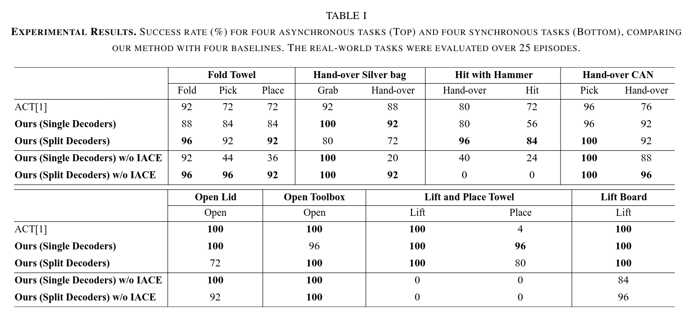

Robots that can operate autonomously in a human living environment are necessary to have the ability to handle various tasks flexibly. One crucial element is coordinated bimanual movements that enable functions that are difficult to perform with one hand alone. In recent years, learning-based models that focus on the possibilities of bimanual movements have been proposed. However, the high degree of freedom of the robot makes it challenging to reason about control, and the left and right robot arms need to adjust their actions depending on the situation, making it difficult to realize more dexterous tasks. To address the issue, we focus on coordination and efficiency between both arms, particularly for synchronized actions. Therefore, we propose a novel imitation learning architecture that predicts cooperative actions. We differentiate the architecture for both arms and add an intermediate encoder layer, Inter-Arm Coordinated transformer Encoder (IACE), that facilitates synchronization and temporal alignment to ensure smooth and coordinated actions. To verify the effectiveness of our architectures, we perform distinctive bimanual tasks. The experimental results showed that our model demonstrated a high success rate for comparison and suggested a suitable architecture for the policy learning of bimanual manipulation.

Our experimental evaluation demonstrates the effectiveness of BICT across various bimanual manipulation tasks, showing significant improvements in success rates compared to baseline methods.
@misc{motoda2025learningbimanualmanipulationaction,
title={Learning Bimanual Manipulation via Action Chunking and Inter-Arm Coordination with Transformers},
author={Tomohiro Motoda and Ryo Hanai and Ryoichi Nakajo and Masaki Murooka and Floris Erich and Yukiyasu Domae},
year={2025},
eprint={2503.13916},
archivePrefix={arXiv},
primaryClass={cs.RO},
url={https://arxiv.org/abs/2503.13916},
}